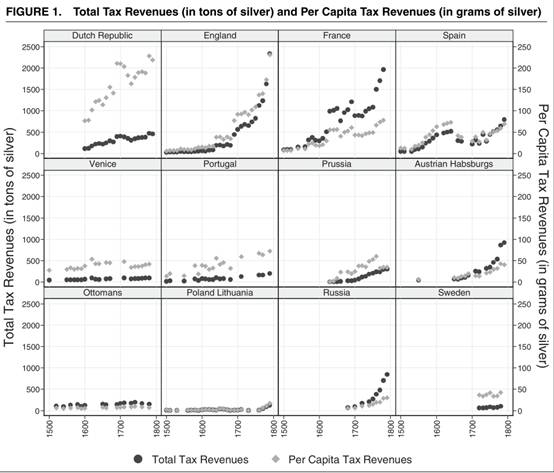
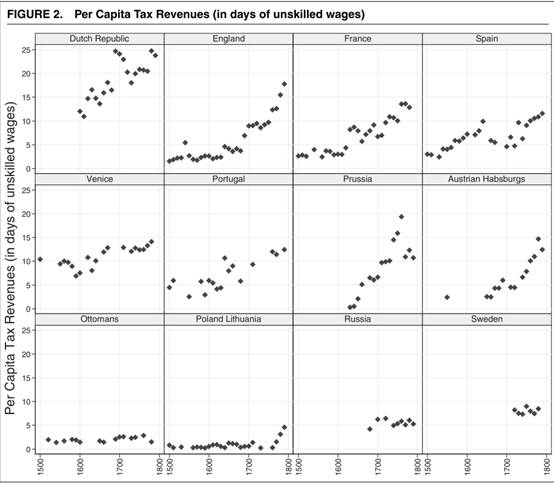
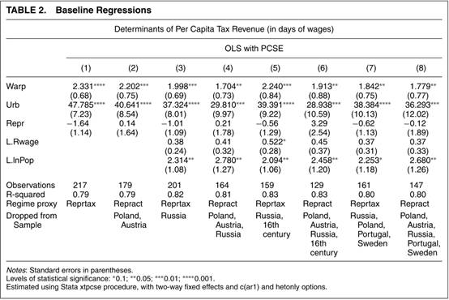
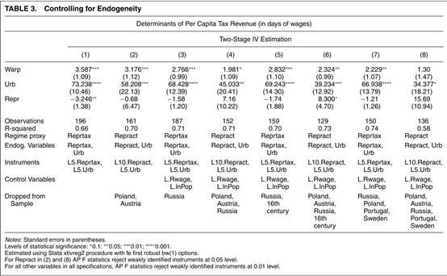
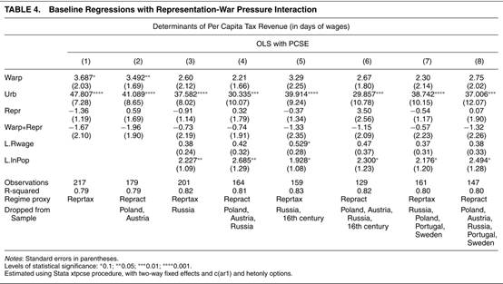
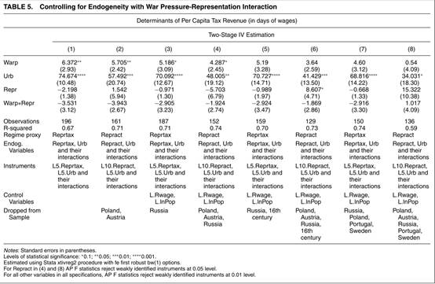
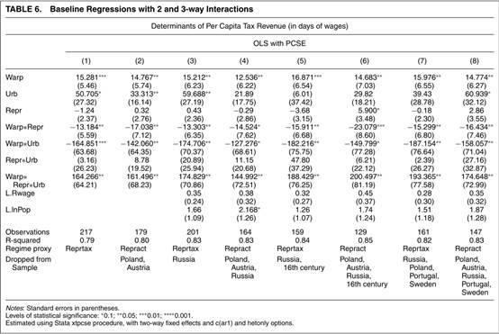
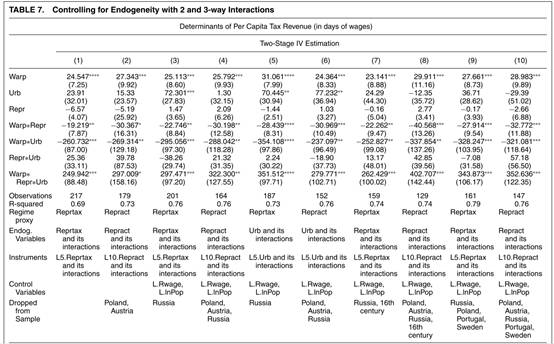

收录于合集
文献来源：Karaman K. Kivanç and Ş. Pamuk (2013). “Different Paths to the Modern State in Europe: The Interaction Between Warfare, Economic Structure, and Political Regime.” American Political Science Review, 107(03): 603-626.
作者简介：Karaman K. Kivanç ，海峡大学经济学系副教授，主要研究领域为政治经济学、制度经济学和经济史
Şevket Pamuk，伦敦政治经济学院欧洲研究所当代土耳其研究教授，海峡大学经济学和经济史教授，他的弟弟 Orhan Pamuk曾获诺贝尔文学奖
国家形成的研究中，学者们主要关注三个问题。塑造现代国家财政能力的机制是什么？国内经济结构和战争在促进现代国家形成的过程中扮演了什么角色？不同的政体类型对国家能力的塑造有什么作用？现代国家构建理论主要是基于早期欧洲国家经验，然而相关的定量研究都是基于 19世纪、20世纪的数据。对最为关键的早期现代欧洲国家形成的定量分析实际上十分欠缺，因此作者希望填补相关方向上的空白。
蒂利（1992）认为有着不同经济结构的国家在现代国家形成的过程中会走向不同的道路.埃特曼（1997）观察到，早期欧洲的权威型(authoritarian)政体和代表型(representative)政体都能够成功建构一个集权化的官僚体系。作者认为，经济结构和政体对现代国家形成的路径都有所影响，他们之间的匹配或者错配决定了一个国家是否能够成功应对当时的战争压力。
作者对早期现代欧洲有三个基本判断：1、在代表政体下，国内精英的组织能力更强；在威权政体下，国内精英的组织能力更弱；2、在战争对现代国家的塑造作用上，政体类型是重要的（也就是说国内精英的组织能力是重要的）3、在中央集权国家的塑造过程中，城市精英更倾向于合作，乡村精英更倾向于对抗。
在分析的时间段上，作者限定为19世纪之前，作者认为之后国家构建的决定性因素有所不同。在早期现代，政治还主要是精英之间的事务，在那之后，随着大规模工业化和常备军的出现，国家则不得不直面普罗大众的要求，国家精英最担心的是来自大众的反抗。在纳入分析的样本上，作者主要挑选了威尼斯、葡萄牙、奥斯曼土耳其、法国、英国、俄国、奥地利、波兰- 立陶宛、普鲁士、瑞典和西班牙。这些国家在19世纪之前是整个欧洲的主要国家。这些国家在现代国家形成的路径和结果上也涵盖了主要的类型。
根据之前比较历史社会学和政治科学的分析，作者提炼除了影响早期欧洲现代国家形成的三个变量：战争、经济结构和政体类型。由此作者提出了四个假设：
H1：国家间战争有利于中央财政能力的构建
H2：城市化是经济结构变化的纽带，对中央财政能力的建设起积极作用
H3：威权政体有利于中央财政能力建设
H4：代表性政体有利于中央财政能力建设
现代国家形成最为重要的标志就是强大的中央财政能力。作者选取的因变量是基于无技能劳动者工资天数的人均中央财政税负（taxrev）。在对各国的税收进行统计上，主要以白银作为统计的基本单位。为了排除人口增长对于财政总收入的影响，作者用中央财政总收入除以人口，得到了人均承担的中央财政税收的数据。由此表现的各国情况参见FIGURE 1。

作者又用非技能劳动者的工资来表示各国人均税负，即在人均承担的中央政府税收在当年约等于非技能劳动者几天的工资，这样就排除了收入水平和物价水平的影响。由此表现的各国情况参见 FIGURE 2。

在自变量方面，作者用一个国家每年每千人在战争中死亡的人数来表示战争压力（Warp）。作者用城镇化率来表示一个国家的经济结构(Urb)。在早期欧洲，城市化率越高，说明一个国家的工商业就越发达。在城市化率的计算上，超过一万人的定居点就被认为是城市。因为不同的政体类型主要表现的是精英的组织能力，而且许多欧洲国家都存在代表会议，但不同代表会议所发挥的作用天差地别，因此没法用是否存在代表会议来表示早期欧洲国家的政体类型。作者主要通过两个变量对政体类型进行测量。一是基于是否存在有税收特权的代表会议的哑变量（Reprtax)，二是代表大会活动频率的指数（Repract)，每年都有会议赋值为1，没有代表会议或者代表会议不被召集则赋值为0。在控制变量方面，作者主要使用了作者还使用人均真实工资（per capital real wages)( Rwage)，人口( lnpop )
回归结果如图：

作者认为之前的研究设计存在着一定的内生性问题。因为在早期欧洲国家，议会主要是讨论税收事务的。如果统治者只在精英愿意去纳税的时候召集会议，那么这会让我们高估代表型政体对财税能力的促进作用。如果统治者有其他的意外之财，并因此倾向于镇压议会活动，那么这就会导致我们低估代表型政体的作用。在城市化率与因变量之间可能也存在着内生性问题。财政能力更高的国家可能会以各种方式去鼓励市场行为和城市化。因此，作者在后面的数据分析中会对这两个数据做50年或者100年的滞后处理。

由图可知，政体对中央财政能力并没有显著作用。作者认为这可能说明了政体类型对国家财政能力的影响并不是无条件的和直接的，政体类型可能对国家财政能力的建设发挥着间接的影响。因此作者假设权威型政体( H5 )/代表型政体( H6 )能更好的把战争的刺激转换为税收收入。作者随后对战争压力、政体类型和城市化一一做了交互项分析。并都呈现了基本型和考虑了内生性问题（即对政体类型和城市化做滞后处理）后的回归结果。




通过战争压力、政体类型和经济结构的交互项分析，作者发现了早期现代国家构建有着更为复杂的发生路径。国家间的战争既可能对现代国家形成起建构作用，也可能起解构作用，这要看国内的经济结构和政体类型。总的来看，更依赖乡村经济的权威型国家和更依赖城市经济的代表型国家都更容易把战争压力转化为推动现代国家形成的动力。
***此次编译感谢吉林大学行政学院贺竞超同学在行政学院Social Science Club上长达两个小时互动性讲解。
政观编辑部